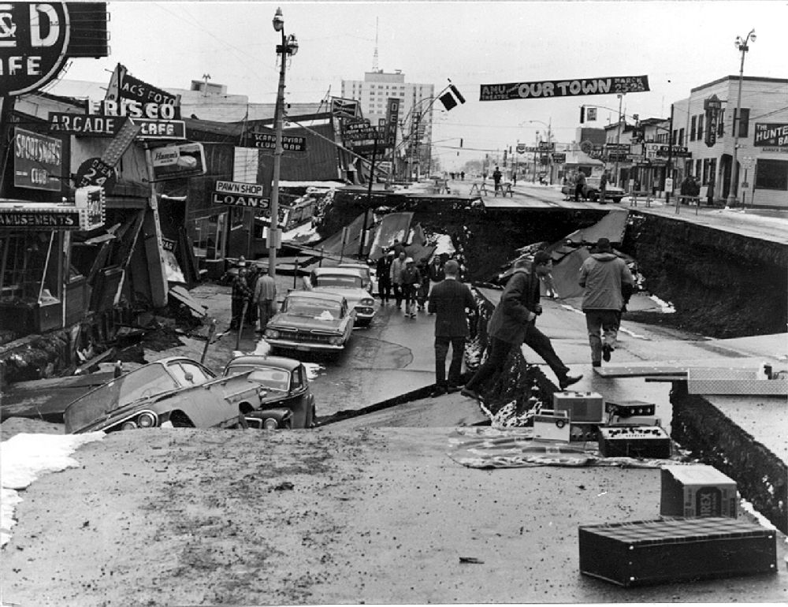

The 9 most devastating earthquakes known in Earth's history
# - Location
Magnitude
Depth of Epicenter
Summary of Damage
Number of Fatalities
1 - Chile (south of Santiago)
9.5
27 approximately 25.0 km (15.5 miles) deep
On May 22, 1960, the strongest earthquake ever recorded hit southern Chile. It had
a magnitude between 9.4 and 9.6 and lasted for about 10 minutes. It’s known as the
1960 Valdivia earthquake or the Great Chilean earthquake. The shaking was so intense
it caused massive damage and triggered a huge tsunami that spread across the Pacific
Ocean, reaching places like Hawaii, Japan, the Philippines, and New Zealand. In Chile,
the earthquake destroyed homes and buildings, leaving about 2 million people homeless.
It's estimated that the damage cost somewhere between $400 to $800 million back then.
Just a couple of days after the earthquake, a nearby volcano called Cordón Caulle erupted,
adding even more problems. This disaster is still remembered as one of the most powerful
and destructive in world history.
Source: Wikipedia
1,655
2 - Alaska, Canada
9.2 - 9.3
25.0 km (16 miles) deep
On March 27, 1964, at 5:36 p.m., a powerful magnitude 9.2-9.3 earthquake struck southern Alaska,
making it the strongest earthquake ever recorded in the U.S. and the second strongest in the world.
The shaking lasted for about 4 and a half minutes and caused the ground to shift dramatically, some
areas moved up or down by as much as 30 feet. The earthquake caused major damage, especially in Anchorage,
where buildings collapsed, roads split open, and landslides destroyed entire neighborhoods. But the worst
part came after: the earthquake triggered a massive tsunami, with waves reaching up to 220 feet high in some
areas. These waves hit towns along the coast of Alaska and also reached as far as California, Oregon, and Hawaii.
In total, around 139 people died, most of them from the tsunami. The damage was estimated at about $311 million
at the time, which would be several billion today.

Source: Wikipedia
139
3 - Communities along the surrounding coasts of the Indian Ocean, Aceh (Indonesia), Sri Lanka, Tamil Nadu (India), and Khao Lak (Thailand).
9.2-9.3
30 km (19 miles) deep
On December 26, 2004, at around 7:58 am local time, a massive magnitude 9.2-9.3 earthquake shook off the coast
of northern Sumatra, Indonesia. It was one of the largest earthquakes ever recorded and lasted for about 10
minutes. The quake lifted the ocean floor by several meters, triggering a devastating tsunami.
Gigantic waves reaching tens of meters swept across the Indian Ocean, crashing onto coasts in 14 countries.
Indonesia's Aceh province was hit first, just 15-20 minutes after the quake, with entire communities wiped out.
The tsunami forced its way inland in Sri Lanka, India, Thailand, the Maldives, Somalia, and even as far as Africa,
causing widespread destruction. In total, approximately 227,000-230,000 people died, with Indonesia alone losing
around 170,000 lives. Sri Lanka lost over 35,000 people, India about 16,000, Thailand around 8,000, and smaller
numbers were recorded in places like the Maldives and Somalia. Coastal homes, fishing villages, and infrastructure
were swept away, while ecosystems like mangroves and coral reefs suffered massive damage.
Source: Wikipedia
227,898
4 - Japan
9-9.1
29 km (18 miles) deep
On March 11, 2011, the Tohoku earthquake and tsunami struck northeastern Japan, causing catastrophic damage.
Nearly 20,000 people were killed or went missing, over 6,000 were injured, and around 300,000 people were left
without homes. More than 120,000 buildings were destroyed, with hundreds of thousands more severely damaged.
The tsunami waves reached up to 40 meters high and flooded towns, farmland, and infrastructure as far as 10
kilometers inland. One of the most devastating impacts was the Fukushima Daiichi nuclear disaster, where
reactor meltdowns released radiation and forced mass evacuations. Entire coastal communities were wiped out,
transportation systems were crippled, and power and water were cut off across many areas. The total cost of
the disaster was over $300 billion, making it the most expensive natural disaster in history.
Source: Wikipedia
19,759
5 - Kamchatka Peninsula in Russia
8.5-9
21.6 km (13 miles) deep
On November 5, 1952, at 4:58 a.m. local time, a powerful magnitude 9.0 earthquake struck off the east coast
of the Kamchatka Peninsula in Russia. The quake triggered a massive tsunami, with waves reaching 12 to 18
meters high, which devastated the town of Severo-Kurilsk on Paramushir Island. The second wave was the most
destructive, wiping out much of the town. Out of approximately 6,000 residents, more than 2,300 people were
killed. The tsunami also caused damage in other parts of the North Pacific, including Hawaii, where property
damage was estimated between $800,000 and $1 million.
Source: Wikipedia & Scientific Inquirer
2,336
6 - off the coast of Ecuador
8.8
20 km (12 miles) deep
On January 31, 1906, at 10:36 a.m. local time, a 8.8 megathrust earthquake
struck off the coast of Esmeraldas, affecting both Ecuador and Colombia. The quake originated
approximately 20 km below the surface and ruptured a fault zone stretching around 500-600 km.
It generated a tsunami with waves about 5-6 meters high. The tsunami caused extensive devastation
along coastal regions between Rio Verde in Ecuador and Tumaco in Colombia. It is estimated to have
killed between 500 and 1,500 people, with around 1,000 fatalities being widely reported. In Colombia
alone, at least 500 people lost their lives, and coastal towns were heavily damaged or destroyed.
The tsunami also reached distant shores like Hawaii, Mexico, and Japan, causing less severe but
noticeable impacts. Following this disaster, the region's vulnerability to massive subduction-zone
earthquakes became a focal point of scientific and safety planning, shaping future preparedness efforts.
Source: Wikipedia & ColombiaOne
About 1,000
7 - Haiti
7
13 km (8.1 miles) deep
On January 12, 2010, at 4:53 p.m., a powerful magnitude 7.0 earthquake struck near Léogâne,
just west of Port-au-Prince, the capital of Haiti. The quake caused massive destruction across
the country. Around 250,000 people were killed, with estimates ranging from 100,000 to over 300,000.
About 3 million people were affected, and more than 1 million were left homeless. The earthquake destroyed
at least 250,000 homes and 30,000 commercial buildings. Critical infrastructureincluding hospitals, the
presidential palace, government buildings, schools, roads, ports, and communication networks was severely
damaged or completely collapsed. The disaster caused a humanitarian crisis and left Haiti heavily dependent
on international aid. The total damage was estimated to be between $7.8 and $8.5 billion and remains one
of the deadliest and most devastating earthquakes in modern history.
Source: Wikipedia
100,000-316,000
8 - Tokyo, Japan
7.9-8.2
23 km (14 miles) deep
On September 1, 1923, at 11:58 a.m. Japan Standard Time, a powerful magnitude 7.9-8.2
earthquake struck the Kantō region, centered near Sagami Bay just south of Tokyo and Yokohama.
The quake caused widespread devastation across the area. Hundreds of thousands of buildings were
destroyed in both Tokyo and Yokohama, reducing vast sections of the cities to rubble and ashes.
The tremors triggered massive firestorms, fueled by strong winds, which swept through neighborhoods
and destroyed entire districts. Open fires were also ignited by overturned stoves and disrupted gas lines.
The combined impact of the shaking and raging fires left an estimated 140,000-150,000 people dead,
possibly more, and over a million people homeless. Infrastructure was shattered: roads and railways
were badly damaged or blocked, critical utilities like electricity, water, and gas systems failed
completely, and communications were disrupted across the region.
Source: Wikipedia & The Atlantic
105,000-142,800
9 - China
7-7.5
Unknown
On January 23, 1556, a massive earthquake struck Shaanxi province in China, with an estimated
magnitude of around 8.0. It is considered the deadliest earthquake in recorded history, with an
estimated 830,000 people killed. The destruction stretched across more than 97 counties, affecting
a region roughly 840 kilometers wide. Many of the deaths were caused by the collapse of yaodongs (man-made
caves in loess cliffs) which crumbled instantly during the quake. In some areas,
up to 60% of the population was lost. Entire villages vanished, the land cracked open, and hillsides
gave way. Aftershocks continued for months, worsening the damage and fear. The disaster not only caused
a huge loss of life but also led to widespread famine, disease, and long-term displacement. It changed
how people lived and built homes in the region for generations to come.
Source: Wikipedia